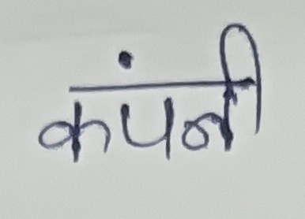
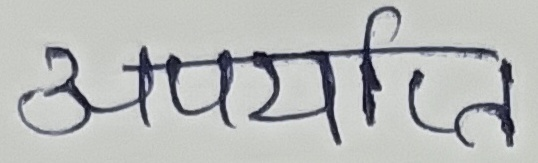
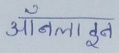
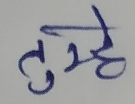
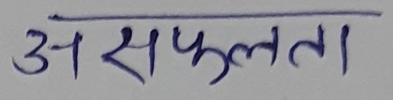
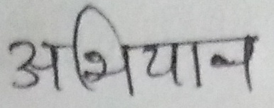
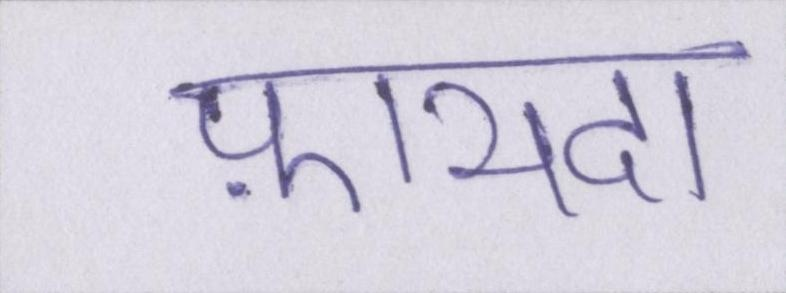
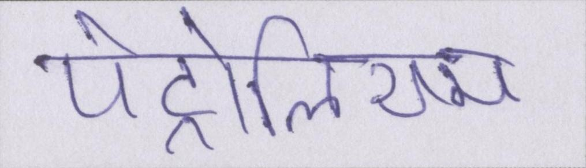

model details: Transformation None Resnet BiLSTM Attn
augmentation: None
character set= 'ऀँंः ऄअआइईउऊऋऌऍऎएऐऑऒओऔक खगघङचछजझञटठडढणतथदधनऩ पफबभमयरऱलळऴवशषसहऺऻ़ ऽािीुूृॄॅॆेैॉॊोौ्ॏ ॐ॒॑॓॔ॕॖॗग़ज़ड़ढ़फ़य़ॠॡॢॣ।॥०१२३४५६७८९॰ॱॲॳॴॵॶॷॸॹॺॻॼॽॾॿ'
| Iter count | Current Validation Accuracy | Best Validation Accuracy | Train Loss | Val Loss |
|---|---|---|---|---|
| 10k | 61.34 | 64.22 | 0.016 | 0.1.10 |
| 16k | 68.49 | 68.91 | 0.006 | 0.92 |
| 22k | 69.87 | 69.87 | 0.002 | 0.964 |
| 1e5 | 68.37 | 69.87 | 0.00008 | 1.08 |
| 2e5 | 68.28 | 69.87 | 0.00001 | 1.25 |
| 3e5 | 68.32 | 69.87 | 0.00001 | 1.31 |
Model peaks at 69.87% validation accuracy @22k iters.
Model took 1.52 more time (22 hours) to train 3e5 epochs as compared to RCNN-CTC
But RCNN-CTC gave peak of 61.48 after 17 hours training
Resnet-Attn reached 69% after 1.5 hours of training
model details: Transformation None RCNN BiLSTM CTC
augmentation: None
character set= 'آأابپتٹثجچحخدڈذرڑزژسشصضطظعفقکگلمنںوؤہۂۃھءیئےۓ'
| Iter count | Current Validation Accuracy | Best Validation Accuracy | Train Loss | Val Loss |
|---|---|---|---|---|
| 1e5 | 74.808 | 75.471 | 0.00056 | 0.709 |
| 2e5 | 75.839 | 76.412 | 0.0005 | 0.722 |
| 3e5 | 74.505 | 76.797 | 0.0008 | 0.764 |
Model touches 76% accuracy at 1.08e5 iters.
Model touches 70% accuracy at 24k iters.
model details: Transformation None RCNN BiLSTM CTC
augmentation: None
character set= 'ऀँंः ऄअआइईउऊऋऌऍऎएऐऑऒओऔक खगघङचछजझञटठडढणतथदधनऩ पफबभमयरऱलळऴवशषसहऺऻ़ ऽािीुूृॄॅॆेैॉॊोौ्ॏ ॐ॒॑॓॔ॕॖॗग़ज़ड़ढ़फ़य़ॠॡॢॣ।॥०१२३४५६७८९॰ॱॲॳॴॵॶॷॸॹॺॻॼॽॾॿ'
| Iter count | Current Validation Accuracy | Best Validation Accuracy | Train Loss | Val Loss |
|---|---|---|---|---|
| 22000 | 60.261 | 60.261 | 0.00202 | 0.90251 |
| 2.4e5 | 61.308 | 61.308 | 0.00001 | 1.12084 |
| 3e5 | 61.103 | 61.308 | 0 | 1.18215 |
| 5e5 | 61.300 | 61.481 | 0 | 1.2352 |
| 7.5e5 | 60.977 | 61.528 | 0 | 1.26202 |
| 10e5 | 61.056 | 61.528 | 0 | 1.29381 |
Model peaks at 7.4e5 iters with 61.528% acc.
However a practically same accuracy of 61.308% is reached in 2.4e5 iters
Even a sub-optimal accuracy of 60.281% can be reached with mere 22k iters.
55% was reached in 10k iters
Following are some results from the best_accuracy model
| Image name | Ground Truth | Prediction |
|---|---|---|
| test/14.jpg |  | कंपनी |
| test/29.jpg |  | सपर्याप्त |
| test/100.jpg |  | आँगलाइख |
| test/350.jpg |  | ९ |
| test/549.jpg |  | शशणशणर्य |
| test/610.jpg |  | अभियान |
| test/1112.jpg |  | फ़यदा |
| test/1455.jpg |  | पेट्रोलिरम |
For lots of instances we are having exact matches. In places where there are few characters mismatched;
they too can be evaluated to true, as given the context by सपर्याप्त, the examinee can only mean अपर्याप्त.
A function to calculate the distance between such words and deciding the threshold is the need
model details: Transformation None RCNN BiLSTM CTC
augmentations: None
character set= '-।ঁংঃ অআইঈউঊঋএঐওঔকখগ ঘঙচছজঝঞটঠডঢণত থদধনপফবভমযরলশষস হ়ঽািীুূৃৄেৈোৌ্ ৎৗড়ঢ়য়ৠৢৣ০১২৩৪৫৬৭৮৯ৰৱ৲৳৴৵৶৷৹৺৻'
| Iter count | Current Validation Accuracy | Best Validation Accuracy | Train Loss | Val Loss |
|---|---|---|---|---|
| 14000 | 60.525 | 60.525 | 0.01673 | 0.7135 |
| 38000 | 66.203 | 66.203 | 0.00015 | 0.85342 |
| 3e5 | 66.566 | 66.598 | 0 | 0.99272 |
| 5.7e5 | 66.808 | 66.808 | 0 | 1.02564 |
| 6e5 | 66.586 | 66.808 | 0 | 1.03218 |
| 9e5 | 66.559 | 66.808 | 0 | 1.05261 |
| 15e5 | 66.628 | 66.808 | 0 | 1.08701 |
Model peaks at 5.7e5 iters with 66.808% acc.
But even a sub-optimal accuracy of 64% can be reached with mere 28k iters.